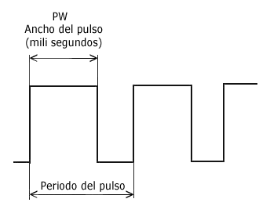
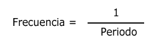
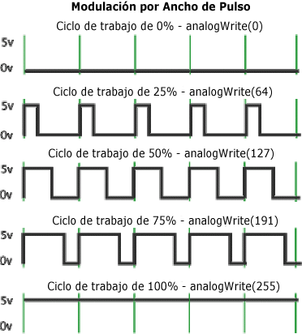
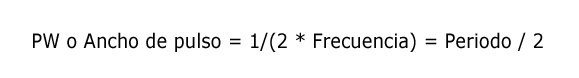
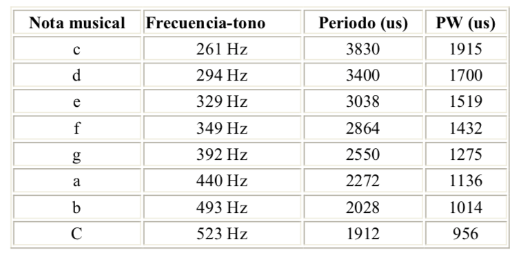

Aprovechando lo que ya sabemos de las señales analógicas PWM, vamos a usar el zumbador para emitir notas.
Recordemos como funcionan este tipo de señales:

Y también como se calcula la frecuencia.

Si el "ciclo de trabajo"=50%, es decir, el ancho de los pulsos activos (ON) e inactivos (OFF) son iguales, entonces:

Obteniéndo la siguiente fórmula matemática:

De forma que a una frecuencia o periodo dados, podemos obtener la siguiente tabla:

Con Arduino, tenemos dos formas de generar tonos. Con el primer ejemplo construiremos y enviaremos una señal cuadrada de salida al zumbador (o piezo), mientras que con el segundo haremos uso de la señal de modulación por ancho de pulso o PWM de salida en Arduino.
Con el siguiente código y con sólo realizar modificaciones en los intervalos de tiempo que el pin seleccionado tenga valor HIGH o LOW, a través de la función digitalWrite(), generamos la señal PWM a una determinada frecuencia de salida igual a 261 Hercios (Hz).
int digPin = 10; // Pin digital 10
int PW = 1915; // Valor que determina el tiempo que el pulso va a estar en ON/OFF
void setup()
{
pinMode(digPin, OUTPUT); // Pin digital en modo salida
}
void loop()
{
delayMicroseconds(PW); // Espera el valor de PW
digitalWrite(digPin, LOW); // Asigna el valor LOW al pin
delayMicroseconds(PW); // Espera el valor de PW
digitalWrite(digPin, HIGH); // Asigna el valor HIGH al pin
}
En Arduino, la señal de salida PWM (pines 9,10) es una señal de frecuencia constante (30.769 Hz) y que sólo
nos permite cambiar el "ciclo de trabajo" o el tiempo que el pulso está activo (ON) o inactivo (OFF),
utilizando la función analogWrite().
Usaremos la característica “Ancho de Pulso” (PW) con analogWrite para cambiar el volumen.
analogWrite(pin, valor)
Valor representa al parámetro "ciclo de trabajo" (PWM) y puede tomar valores entre 0 y 255.
- 0 corresponde a una señal de salida de valor constante de 0 v (LOW) o 0% de "ciclo de trabajo".
- 255 es una señal de salida de valor constante de 5 v (HIGH) o 100% de "ciclo de trabajo".
Para valores intermedios, el pin rápidamente alterna entre 0 y 5 voltios - el valor más alto, lo usual es
que el pin esté en HIGH (5 voltios).
La frecuencia de la señal PWM es constante y aproximadamente de 30.769 Hz.
int digPin = 9;
int volumen = 300; // Máximo volumen es 1000
int PW = 1915;
void setup()
{
pinMode(digPin, OUTPUT); // Pin digital en modo salida
}
void loop()
{
analogWrite(digPin,0);
analogWrite(digPin,volume);
delayMicroseconds(PW);
analogWrite(digPin,0);
delayMicroseconds(PW);
}